IntelliJ IDEA
IntelliJ IDEA es un IDE creado para ayudar a los desarrolladores Java en la creación, prueba y análisis de aplicaciones. Sus funciones incluyen coincidencia de patrones, automatización del flujo de trabajo, control de versiones, análisis de código estático, pruebas de unidades, descompilador integrado y atajos de teclado.
La plataforma indexa todo el código, lo que ayuda a los desarrolladores a encontrar errores, navegar por las estructuras del código y realizar refactorizaciones del mismo. Con las funciones de finalización de miembros estáticos, encadenados e inteligentes, los programadores pueden recibir sugerencias sobre clases, métodos, campos o palabras clave relevantes, enumerar los símbolos aplicables accesibles a través de métodos y emplear métodos o funciones estáticos. Los desarrolladores pueden usar la herramienta de depuración para predecir riesgos y recibir alertas en caso de excepciones o condiciones falsas (true/always) en función del estado de ejecución del programa.
IntelliJ IDEA ofrece varias herramientas de automatización de compilación, como Maven, Gradle, Ant, NPM y Grunt, que ayudan a los miembros del equipo a realizar actividades tales como compilación de código, empaquetado, pruebas y más. Los usuarios pueden acceder a bases de datos en vivo como PostgreSQL, Oracle, MySQL, MongoDB o Snowflake a través de DataGrip, un entorno de base de datos multimotor, así como ejecutar consultas, buscar y exportar datos y administrar esquemas desde la interfaz visual.
El proceso de indexación del proyecto
Hay una idea que conviene entender desde el principio, porque explica por qué IntelliJ se comporta como se comporta: la plataforma no trabaja con archivos sueltos, sino con un modelo completo del proyecto. Para construir ese modelo, cuando se abre un proyecto (o cuando se modifican archivos), IntelliJ lanza en segundo plano un proceso de indexación: recorre todo el código, lo analiza y construye una suerte de "mapa" interno con todas las clases, métodos, variables y relaciones que encuentra.
Esa indexación es la razón por la que, la primera vez que se abre un proyecto grande, el IDE consume bastantes recursos (CPU, disco y memoria) durante un rato. Mientras el icono de progreso de la parte inferior derecha esté activo, el entorno está leyendo y catalogando el proyecto. No es un mal funcionamiento, sino el precio que hay que pagar para que después todo vaya rápido. En proyectos pequeños, ese proceso dura apenas unos segundos; en proyectos de cientos de archivos, puede tardar más, y conviene dejar que termine antes de ponerse a trabajar a fondo.
Las ventajas que aporta ese trabajo previo son enormes e inmediatas:
- Búsqueda instantánea: se puede buscar cualquier clase, método o símbolo en todo el proyecto y encontrarlo al momento, porque el índice ya sabe dónde está cada cosa.
- Autocompletado inteligente: las sugerencias no se basan solo en el texto escrito, sino en el tipo real de cada variable y en las clases que existen de verdad. Por eso el IDE propone métodos que tienen sentido en ese contexto y descarta los que no.
- Refactorizaciones seguras: al cambiar el nombre de una clase o de un método, IntelliJ puede actualizar automáticamente todas sus referencias en el proyecto, porque conoce todas las relaciones. Sin ese mapa interno, renombrar algo sería una operación arriesgada.
En resumen, la indexación es lo que convierte a IntelliJ en un entorno que "comprende" el código, y es la base sobre la que se apoyan todas las ayudas que veremos a continuación.
Instalación de IntelliJ
En este apartado vamos a describir los pasos para instalar IntelliJ en el sistema operativo Ubuntu.
Descargar IntelliJ desde la página oficial de JetBrains (https://www.jetbrains.com/es-es/idea/download/#section=linux). Al finalizar la descarga nos queda un archivo como este ideaIC-2021.2.2.tar.gz (el nombre puede variar según la versión) en la carpeta de descargas o donde lo hayamos descargado.
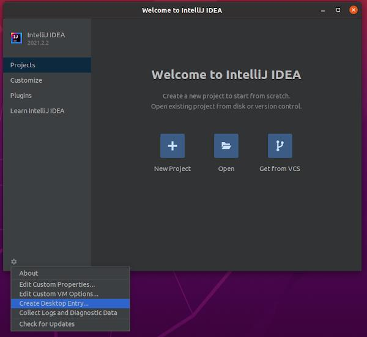
Descomprimimos el archivo y lo generamos en la carpeta /home/usuario con el siguiente comando:
Donde usuario es el nombre de nuestro usuario. Cabe destacar que la primera parte de la instrucción dependerá de la carpeta donde esté descargado el fichero. Se crea una carpeta en la carpeta de nuestro usuario con el nombre idea-IC-212.5284.40.
Renombramos el nombre de la carpeta a intellij (opcional) con el siguiente comando:
Ejecutamos el instalador con el siguiente comando:
Seguimos los pasos de instalación y se elige crear acceso directo en escritorio.
Por último, si queremos desinstalar IntelliJ:
rm -Rf /home/usuario/intellij
rm /usr/share/applications/jetbrains-idea-ce.desktop
rm -Rf .local/share/JetBrains/IdeaIC2021.2
rm -Rf .cache/JetBrains/IdeaIC2021.2
rm -Rf .config/JetBrains/IdeaIC2021.2
rm -Rf ~/.local/share/JetBrains/consentOptions/accepted
Otros sistemas operativos
Para instalar IntelliJ en Windows o en macOS se puede consultar la documentación oficial de JetBrains, ya que el proceso varía respecto al de Ubuntu.
Primeros pasos con IntelliJ
En este punto vamos a ver un poco cómo funciona IntelliJ y cómo desenvolvernos con él para crear un nuevo proyecto, compilarlo y demás.
Crear un proyecto de Java
Al abrir el IDE se nos muestra un cuadro de diálogo donde podemos abrir proyectos abiertos anteriormente o crear un nuevo proyecto.
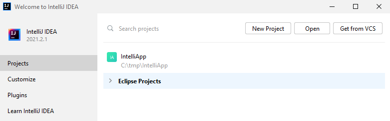
Si cerramos el IDE con un proyecto abierto, la próxima vez que iniciemos se abrirá directamente el proyecto en el que estábamos trabajando, sin mostrar el cuadro de diálogo anterior.
En la pestaña "Customize" es posible modificar algunos parámetros de apariencia especiales, como son el esquema de colores (Color Theme) y el tamaño de las fuentes empleadas (IDE Font).
Creación de un nuevo proyecto
Pulsamos el botón "New Project" en la pestaña Projects del cuadro de diálogo.
Seleccionamos el tipo de proyecto (Java) y la versión del JDK a emplear (Project SDK). También es posible seleccionar gestores de dependencias como Gradle o Maven.
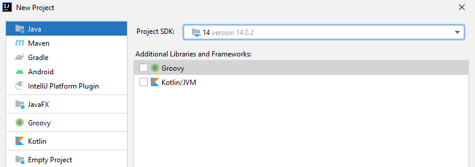
Por defecto, el SDK tomado es el instalado en el ordenador, pero es posible desplegar la lista y seleccionar o descargar otras versiones del SDK de Java:
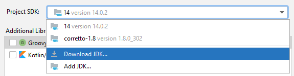
Lo siguiente es seleccionar una plantilla de proyecto. La plantilla "Command Line App" define una aplicación sin GUI para ejecutarse desde la línea de comandos.
En el siguiente cuadro de diálogo debemos indicar el nombre del proyecto, la ubicación en el disco donde deseamos guardarlo y el nombre de paquete raíz que englobará todas las clases del proyecto:
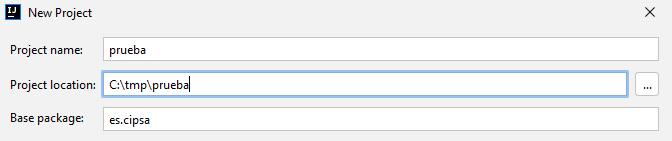
Ventanas del IDE
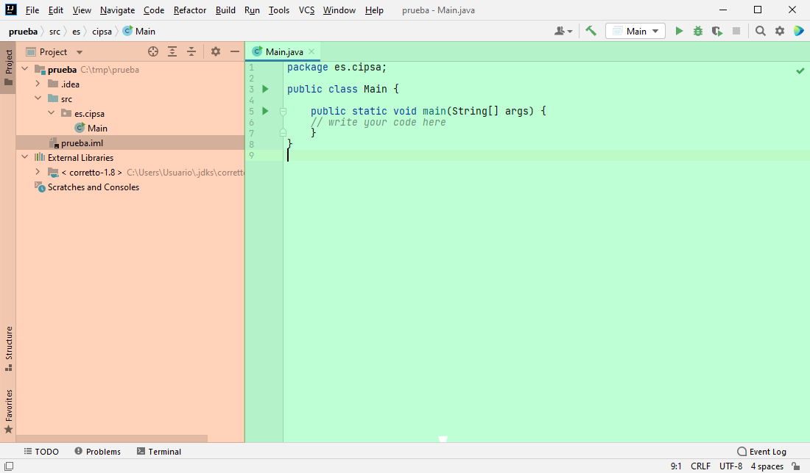
La interfaz de usuario del IDE se divide básicamente en dos ventanas:
- Ventana de proyecto: muestra la estructura del proyecto, indicando la librería Java SDK que se emplea en "External Libraries", y los paquetes y clases que componen el código fuente del proyecto en la carpeta "src".
- Ventana de edición: muestra el código de los ficheros que se están editando. Pueden editarse varios archivos al mismo tiempo, que se muestran como pestañas en la parte superior. También es posible dividir la ventana para editar múltiples ficheros a la vez.
Ayudas a la edición del código
Autocompletado: muestra los posibles métodos que pueden llamarse, indicando los argumentos y el tipo del valor retornado para seleccionar el que se quiere.
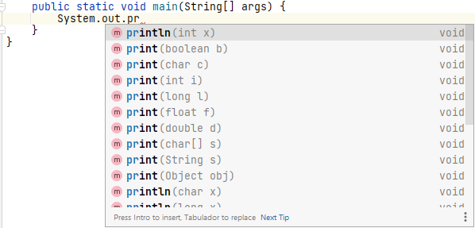
Indicación de errores y sugerencias: muestra errores en el código e indica sugerencias para resolverlos, como importar los paquetes necesarios para instanciar clases.
Apertura de un proyecto
Para abrir un proyecto ya existente podemos hacer clic sobre su nombre en la ventana de inicio del IDE si ya lo abrimos anteriormente.
Si, por el contrario, no se ha abierto antes, debemos pulsar el botón "Open" y seleccionar la carpeta donde se encuentra el proyecto. Las carpetas con un proyecto se muestran con un icono diferente:
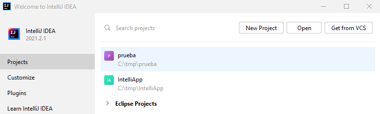
Cierre de un proyecto
Para cerrar el proyecto actual seleccionamos File → Close Project.
Ejecución
Al crear una aplicación de tipo consola se crea una única clase Main provista de un único método estático main().
Podemos editar directamente el código en la ventana de edición y ayudarnos del autocompletado. Implementamos el siguiente código de prueba:
package es.cipsa;
public class Main {
public static void main(String[] args) {
int tabla = 5;
for (int num = 1; num <= 10; num++) {
System.out.println(String.format("%d x %d = %d", tabla, num, tabla * num));
}
}
}
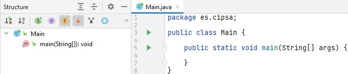
Para ejecutar el código hacemos clic sobre el icono de Run en la barra de herramientas. Esto ejecuta la aplicación con la configuración de ejecución predeterminada "Main".
Si deseamos ejecutar el proyecto a partir de otra clase debemos:
- Seleccionar el archivo en la ventana de proyecto.
- Hacer clic con el botón derecho.
- Seleccionar la opción "Run \<archivo>".
Si el código no contiene errores, se despliega la ventana "Run" mostrando el resultado de la ejecución por pantalla.
Errores de compilación
Antes de seguir, conviene distinguir con claridad los dos grandes tipos de errores con los que se va a encontrar cualquier programador, porque se comportan de maneras muy distintas y se arreglan con herramientas diferentes.
Los errores de compilación son los que impiden que el programa llegue siquiera a ejecutarse. Se producen cuando algo está mal escrito en el código: falta un punto y coma, se ha escrito mal el nombre de una variable, se usan tipos incompatibles, hay una llave sin cerrar. El compilador los detecta antes de traducir el programa, y por eso el entorno puede señalarlos de forma muy precisa, indicando el archivo, la línea y el motivo. Cuando hay un error de compilación, no se puede ejecutar nada hasta corregirlo: el programa simplemente no existe como tal.
El segundo tipo son los errores lógicos, popularmente llamados bugs. En este caso el código compila perfectamente porque no hay ningún fallo de sintaxis, pero el programa no hace lo que debería: calcula mal un resultado, entra en un bucle infinito, se queda colgado, se cierra de forma inesperada o devuelve un valor incorrecto. Estos errores son mucho más difíciles de localizar, porque el compilador no los detecta: el programa funciona, solo que funciona mal. Para cazarlos es para lo que existe el depurador, que estudiaremos a fondo en el siguiente apartado.
Vamos a ver ahora cómo se manifiesta un error de compilación en IntelliJ. Modificamos la línea 7 del código anterior borrando el valor 5. Al momento se muestra una línea roja:
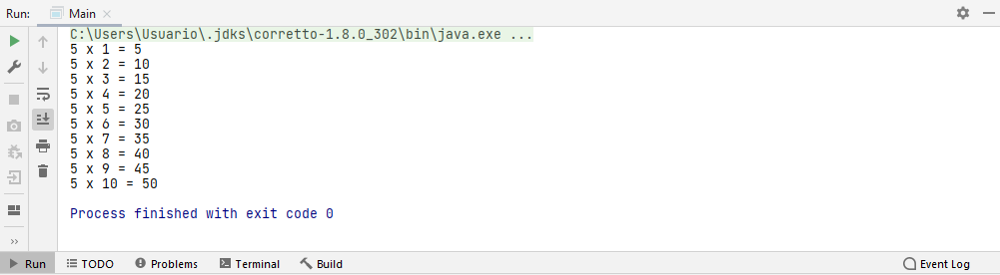
Y un indicador de errores en la parte superior:
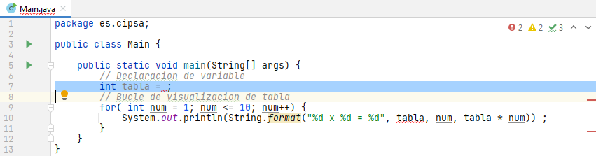
Si intentamos ejecutar el código, se despliega la ventana Build mostrando los errores presentes en el código:
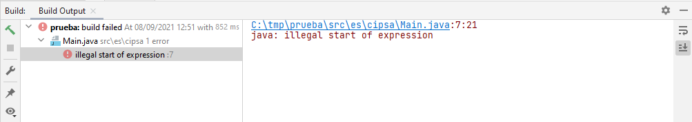
Si hacemos clic en el vínculo del lado derecho, se selecciona automáticamente la línea en la que se ha detectado el error de sintaxis, lo que ahorra el trabajo de buscarla a mano.
Para comprobar si el código es correcto, podemos compilar el proyecto sin ejecutarlo con el botón de la barra de herramientas. Si la compilación es correcta, la ventana Build muestra un mensaje indicando que no hay errores.
Depuración
Hasta aquí hemos visto cómo detectar y corregir errores de compilación, que son los "fáciles". Ahora entra en escena el terreno más delicado: los errores lógicos, esos que hacen que el programa compile y se ejecute, pero que produzcan resultados equivocados. Para enfrentarse a ellos, todo entorno de desarrollo, independientemente de la plataforma y del lenguaje utilizado, suministra una serie de herramientas de depuración que permiten verificar el código generado y ayudar a realizar pruebas tanto estructurales como funcionales.
Durante el proceso de desarrollo de software se pueden producir, como decíamos, dos tipos de errores: errores de compilación o errores lógicos. Cuando se desarrolla una aplicación en un IDE, ya sea Visual Studio, Eclipse o NetBeans, si al escribir una sentencia olvidamos un ;, hacemos referencia a una variable inexistente o utilizamos una sentencia incorrecta, se produce un error de compilación. Cuando ocurre un error de compilación, el entorno nos proporciona información de dónde se produce y cómo poder solucionarlo. El programa no puede compilarse hasta que el programador o programadora corrija ese error.
El otro tipo de errores son los lógicos, comúnmente llamados bugs; estos no evitan que el programa se pueda compilar con éxito, ya que no hay errores sintácticos ni se utilizan variables no declaradas. Sin embargo, los errores lógicos pueden provocar que el programa devuelva resultados erróneos, que no sean los esperados, o pueden provocar que el programa termine antes de tiempo o que no termine nunca. Son, por definición, los que más cuesta encontrar, porque el compilador no da ninguna pista.
Para solucionar este tipo de problemas, los entornos de desarrollo incorporan una herramienta conocida como depurador. El depurador permite supervisar la ejecución de los programas para localizar y eliminar los errores lógicos. Un programa debe compilarse con éxito para poder utilizarlo en el depurador. El depurador nos permite analizar todo el programa mientras este se ejecuta: permite suspender la ejecución, examinar y establecer los valores de las variables, comprobar los valores devueltos por un determinado método, el resultado de una comparación lógica o relacional, etc.
El proceso de depuración comienza con la ejecución de un caso de prueba. Se evalúan los resultados de la ejecución y, fruto de esa evaluación, se comprueba que hay una falta de correspondencia entre los resultados esperados y los obtenidos realmente. El proceso de depuración siempre tiene uno de los dos resultados siguientes:
- Se encuentra la causa del error, se corrige y se elimina.
- No se encuentra la causa del error. En este caso, la persona encargada de la depuración debe sospechar la causa, diseñar casos de prueba que ayuden a confirmar sus sospechas y volver a repetir las pruebas para identificar los errores y corregirlos (pruebas de regresión, repetición selectiva de pruebas para detectar fallos introducidos durante la modificación).
Depurar con IntelliJ
La depuración permite detectar y corregir los errores de ejecución y lógicos. Para ello se emplean los puntos de ruptura (breakpoints). Un punto de ruptura es una marca que se coloca en una línea concreta del código y que le dice al depurador: "cuando la ejecución llegue aquí, detente". Es, en esencia, una forma de hacer una pausa controlada para poder mirar qué está pasando justo antes de que ocurra el problema.
Para fijar un punto de ruptura se hace clic en el margen izquierdo de la línea donde se desea situarlo. Una vez situado, se muestra como un punto rojo en el margen izquierdo de la línea:
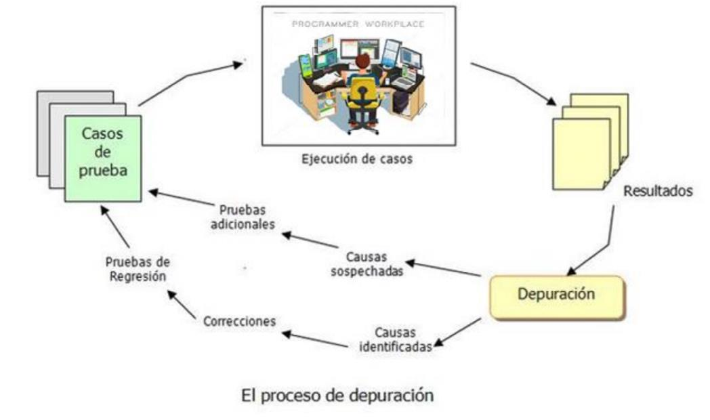
Cuando el programa se ejecuta en modo depuración y alcanza un punto de ruptura, el flujo de ejecución se detiene por completo. El programa queda congelado en ese instante: las variables conservan sus valores, la pila de llamadas refleja exactamente en qué punto está, y nada avanza hasta que el programador decide cómo continuar. Es como pausar una película en el fotograma exacto que interesa.
Los puntos de ruptura ponen en pausa la ejecución del código cuando se ejecuta en modo de depuración, mediante el icono de Debug. Esto ejecuta la aplicación en modo de depuración empleando la configuración predeterminada "Main".
Si queremos ejecutar en depuración el proyecto a partir de otra clase debemos:
- Seleccionar el archivo en la ventana de proyecto.
- Hacer clic con el botón derecho.
- Seleccionar la opción "Debug \<archivo>".
La ejecución se inicia hasta alcanzar el primer punto de ruptura y se detiene:
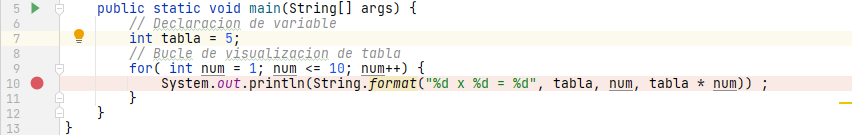
Controlar la ejecución paso a paso
Se abre entonces la ventana "Debug". Una vez detenido el programa, el programador decide cómo continuar la ejecución mediante los iconos de la barra superior. Cada uno de ellos mueve el puntero de instrucción (el marcador interno que indica cuál es la línea que se va a ejecutar a continuación) de una forma distinta, y entender bien qué hace cada uno es la clave para depurar con criterio:
- Step Over: ejecuta la línea actual y salta a la siguiente, sin entrar en los métodos que se llamen. Si la línea contiene una llamada a un método, este se ejecuta por completo y el control continúa en la línea siguiente del método actual. Es el paso que se usa cuando no interesa inspeccionar el interior de la función llamada.
- Step Into: si la línea actual contiene una llamada a un método, entra dentro de él y se detiene en su primera instrucción, lo que permite inspeccionar qué ocurre por dentro. Si la línea no es una llamada, se comporta como un Step Over. Es el paso que se usa para bucear hacia dentro y ver el detalle de una función sospechosa.
- Step Out: sale del método en el que estamos actualmente y devuelve el control a la línea siguiente del método que lo había llamado. Es el movimiento inverso al Step Into, y sirve para terminar de una vez con el interior de una función cuando ya se ha visto lo que se quería.
- Run to Cursor: continúa la ejecución normal hasta la línea donde se encuentre el cursor, y allí se detiene. Es una forma cómoda de avanzar rápido a un punto concreto sin colocar un punto de ruptura.
- Resume Program: continúa la ejecución con normalidad hasta encontrar el próximo punto de ruptura. Es el botón de "seguir", y se usa cuando ya se ha inspeccionado lo que se quería y se desea dejar correr el programa.
- Stop \<fichero>: detiene la depuración actual, terminando la ejecución del programa.
Combinando estos movimientos, el programador puede recorrer el programa con la precisión de un cirujano, deteniéndose exactamente en los puntos que le interesan y evitando los que no aportan nada.
La pila de llamadas y las variables
La ventana de depuración no solo permite moverse, sino también mirar dentro del programa. Dos paneles son esenciales para ello.
La pestaña "Frames" muestra la pila de llamadas (call stack): la lista de métodos que se han ido llamando unos a otros hasta llegar al punto actual. Cuando un método llama a otro, la llamada se "apila" encima; cuando el segundo termina, se "desapila" y el control vuelve al primero. La pila de llamadas es, por tanto, el historial del camino que ha seguido la ejecución para llegar hasta aquí, con el método actual arriba del todo. Poder inspeccionarla es muy potente, porque permite subir y bajar por esos niveles: si se selecciona un frame superior (un método que llamó al actual), se puede ver el estado de sus variables en aquel momento, aunque ya se haya salido de él. Eso ayuda a entender cómo se llegó a la situación problemática.
La pestaña "Variables" muestra las variables locales que están activas en el marco actual, con sus valores en el momento en que se ha detenido la ejecución. Es como mirar por una ventana a la memoria del programa y ver, en directo, qué vale cada variable. Al ir avanzando línea a línea, esos valores se van actualizando, de modo que se puede observar cómo cambia una variable sospechosa en cada iteración.
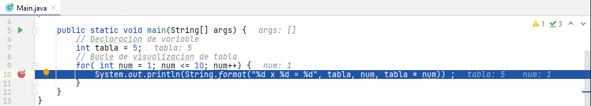
Pueden añadirse más variables y expresiones pulsando el botón +. El valor de las variables se actualiza al ir ejecutando línea a línea.
Configuración de puntos de ruptura
Los puntos de ruptura actúan por defecto deteniendo la ejecución cada vez que se alcanza la línea en modo de depuración. Esto está bien para la mayoría de los casos, pero se vuelve un lastre cuando el punto está dentro de un bucle que se repite cientos de veces: si el problema solo ocurre en la iteración 500, no tiene sentido pararse en las 499 anteriores. Para estos casos existen los puntos de ruptura condicionales, que solo detienen la ejecución cuando se cumple una condición.
Para configurarlos, se accede a:
Run → View Breakpoints…
Se abre un cuadro de diálogo que muestra la posición de todos los puntos de ruptura:
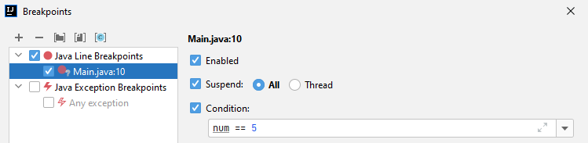
Al seleccionar un punto de ruptura en el lado izquierdo se muestran sus opciones de configuración en el lado derecho. Si marcamos la casilla "Condition" e indicamos una condición, el punto de ruptura detendrá la ejecución únicamente cuando la ejecución lo alcance y la expresión indicada se evalúe como cierta. Así, para depurar un bucle largo, basta con poner algo como num == 500 en la condición y dejar que el programa corra libremente hasta esa iteración concreta, sin tener que pulsar el botón de continuar una y otra vez. Es una de esas pequeñas funciones que ahorran una cantidad enorme de tiempo.
Configuración y gestión del SDK (Java Development Kit)
Hasta aquí hemos creado proyectos, los hemos ejecutado y hemos aprendido a cazar errores con el depurador, pero todo ese trabajo se ha apoyado en una pieza que hasta ahora ha permanecido invisible. Esa pieza es el SDK de Java, el conjunto de herramientas que convierte el código escrito en el editor en un programa que la máquina puede ejecutar. Sin él, IntelliJ se queda en un editor de texto muy sofisticado: colorea la sintaxis y propone métodos, pero es incapaz de compilar y de lanzar nada.
La importancia de esa pieza se hace evidente en cuanto se abre un proyecto ajeno. Un repositorio clonado o un proyecto descargado de un compañero puede aparecer con todo el código subrayado en rojo, como si estuviera plagado de errores. Casi nunca el problema está en el código: lo que ocurre es que ese proyecto apunta a un SDK que en nuestro equipo no existe o que se encuentra en una ruta distinta. Diagnosticar y resolver esa situación es una tarea cotidiana con cualquier IDE, y conviene dominarla desde el principio.
La función del JDK: el motor de ejecución y compilación tras el IDE
Para empezar, conviene ordenar tres siglas que se suelen usar como sinónimos y que no lo son en absoluto. El JDK (Java Development Kit) es el kit de desarrollo completo: incluye el compilador javac, la máquina virtual java y las librerías de la plataforma. El JRE (Java Runtime Environment) es solo la parte necesaria para ejecutar programas ya compilados, de modo que contiene la máquina virtual y las librerías, pero no el compilador. El IDE, por su parte, es la herramienta de trabajo que orquesta todo el proceso, pero no aporta por sí mismo ninguna de las dos cosas anteriores.
Esa separación explica por qué IntelliJ, siendo él mismo un programa escrito en Java, no fabrica el bytecode de nuestros proyectos por su cuenta. Cuando se pulsa el botón de ejecutar, el IDE no compila ni arranca nada de forma interna, sino que delega en las herramientas externas del JDK: entrega los ficheros .java al compilador javac, que los traduce a ficheros .class con bytecode, y después lanza la máquina virtual java para que interprete ese bytecode. El resultado material de ese proceso son los .class que aparecen en la carpeta de salida del proyecto, normalmente bajo out/. El IDE es, en esa cadena, la cabina desde la que se da la orden; el JDK es el motor y el combustible con los que el coche se mueve de verdad.
Ese reparto de responsabilidades es justo el motivo del problema más repetido entre quienes empiezan: abrir un proyecto que no tiene SDK asignado y encontrar todo el código en rojo. El editor sabe qué clases y métodos existen porque los ha indexado, pero al no poder resolver las librerías estándar de Java que esas clases utilizan, marca como desconocido todo lo que de ellas depende. No son errores reales del código, sino la señal de que falta el motor. La solución pasa por conectar el IDE con un JDK, y eso puede hacerse de dos maneras: dejando que IntelliJ lo descargue o señalando uno que ya esté instalado en el equipo.
Descarga e instalación integrada del JDK desde IntelliJ
Para resolver la ausencia de SDK sin salir del entorno, el propio IDE incorpora un asistente de descarga que se abre desde File → Project Structure → Platform Settings → SDKs. Dentro de esa sección se pulsa el botón + y se elige la opción Download JDK. El mismo asistente aparece también en el diálogo New Project, desplegando la lista del Project SDK y seleccionando Add SDK → Download JDK, que es la vía cómoda cuando se configura todo de una vez al crear el proyecto.
A partir de esa base, el diálogo de descarga plantea dos decisiones que merecen detenerse a mirar. De un lado está la versión del JDK, donde lo sensato para un entorno de clase es elegir una LTS (Long Term Support), es decir, una de esas versiones de soporte prolongado que el ecosistema mantiene durante años: la 8, la 11, la 17 o la 21. Las versiones no LTS reciben mejoras y correcciones durante un periodo mucho más corto, así que quedan descartadas de entrada para el trabajo diario. Del otro lado aparece el proveedor (vendor), porque el JDK no lo distribuye una única empresa: junto al OpenJDK de Oracle conviven compilaciones comunitarias como Eclipse Temurin, Amazon Corretto o Azul Zulu, que respetan el estándar y añaden sus propios parches de seguridad. Para el aula cualquiera de ellas sirve; lo importante es elegir una y mantenerse en ella para no mezclar versiones sin necesidad.
Esto nos lleva directamente a la parte que ocurre tras bambalinas. Al pulsar Download, IntelliJ descarga el paquete y lo descomprime en una carpeta propia del perfil del usuario, que en Linux suele ser ~/.jdks, en Windows C:\Users\<usuario>\.jdks y en macOS ~/Library/Java/JavaVirtualMachines, tal y como se aprecia en el campo Location del diálogo. La instalación queda así dentro de la cuenta del alumno, sin tocar las rutas del sistema ni pedir permisos de administrador, algo que se agradece en equipos compartidos donde no se puede instalar software a nivel global. Una vez terminada la descarga, el IDE registra el SDK automáticamente y lo deja disponible en la lista de SDKs de la plataforma, de manera que no hay que anotar rutas ni editar variables de entorno a mano.
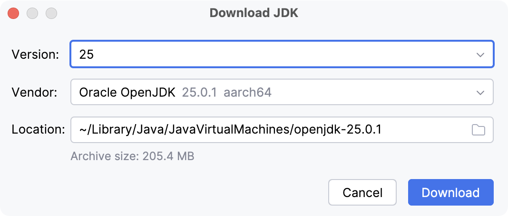
Detección y vinculación de un JDK instalado localmente
En otros equipos, sobre todo en los que ya vienen preparados por el centro, el JDK no hay que descargarlo porque ya está instalado en el sistema. En ese caso la operación consiste en señalar a IntelliJ dónde se encuentra. El camino es el mismo punto de partida, File → Project Structure → Platform Settings → SDKs, pero en lugar de Download JDK se elige Add SDK → JDK, una opción que también aparece en el diálogo New Project al desplegar la lista del Project SDK. Se abre entonces un explorador de archivos en el que hay que seleccionar la carpeta raíz del JDK, no una subcarpeta cualquiera.
Reconocer esa carpeta raíz es sencillo si se conocen las ubicaciones habituales según el sistema operativo. En Linux los JDK viven bajo /usr/lib/jvm/, en Windows bajo C:\Program Files\Java\ y en macOS bajo /Library/Java/JavaVirtualMachines/. Elegir bien el directorio importa porque el JDK tiene una estructura interna muy concreta: dentro de él están bin con javac y java, lib con las librerías y jmods con los módulos de la plataforma. Si se selecciona una carpeta equivocada, el IDE no reconoce el SDK y el código sigue en rojo.
Una vez añadido, el SDK muestra en esa misma ventana toda la información que IntelliJ ha extraído de él. La lista de classpath reúne las rutas donde la máquina virtual buscará las clases compiladas, y funciona como el índice de un libro: sin ella, el programa no sabe en qué estante está cada cosa que necesita. Junto a esa lista aparecen las librerías estándar de Java y, si el paquete las incluye, los fuentes de la plataforma, que permiten entrar con el depurador dentro del propio código de la biblioteca. Comprobar que esos tres bloques están presentes y no vacíos es la forma más rápida de confirmar que la vinculación se ha hecho correctamente.
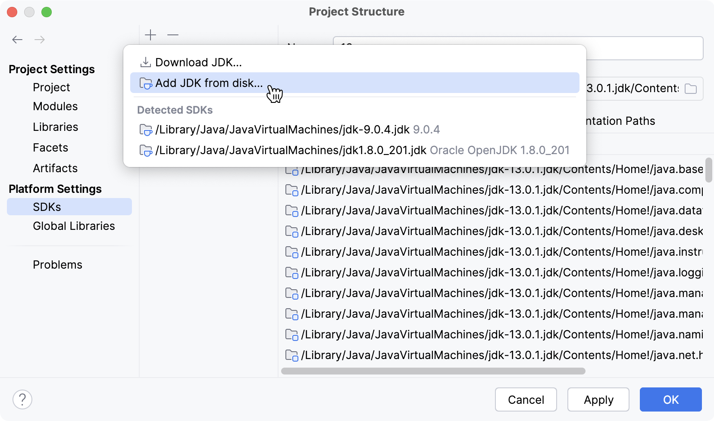
Gestión del Project SDK y Project Language Level
Queda un último escalón por subir, y es el que enlaza el SDK de la plataforma con cada proyecto concreto. Para tocarlo se accede a File → Project Structure → Project, o con el atajo Ctrl + Alt + Shift + S, que abre la misma ventana desde cualquier punto del IDE. En esa pantalla se decide qué SDK global se asigna al proyecto actual, lo que resulta muy útil cuando el equipo tiene varias versiones conviviendo: un proyecto antiguo puede quedarse anclado a la 11 mientras otro reciente trabaja con la 21, sin que una configuración estorbe a la otra.
El siguiente ajuste crítico de esa misma pantalla es el Project Language Level, y aquí merece la pena detenerse porque se confunde con frecuencia. El SDK define el juego de herramientas disponible, mientras que el Language Level declara qué características de sintaxis se permiten en el editor. Son dos cosas distintas que a menudo no van de la mano: se puede tener un JDK actual y, al mismo tiempo, un Language Level bajo que desactive las novedades del lenguaje. Por eso el IDE permite fijar ese nivel por separado, para mantener la compatibilidad con proyectos que deben compilarse en entornos más antiguos.
La consecuencia de esa distinción aparece al escribir. Si con un Language Level configurado en una versión inferior se intenta usar sintaxis moderna como var para la inferencia de tipos o las expresiones switch, el editor marcará un error de compilación aunque la máquina virtual instalada sea perfectamente capaz de entenderlo. No es un fallo del JDK, sino del nivel declarado, y la solución pasa por subir el Language Level al valor que corresponda a la sintaxis que se quiere emplear. Ajustar esta pareja de valores a la versión real de Java del proyecto evita una buena cantidad de rojos fantasma.
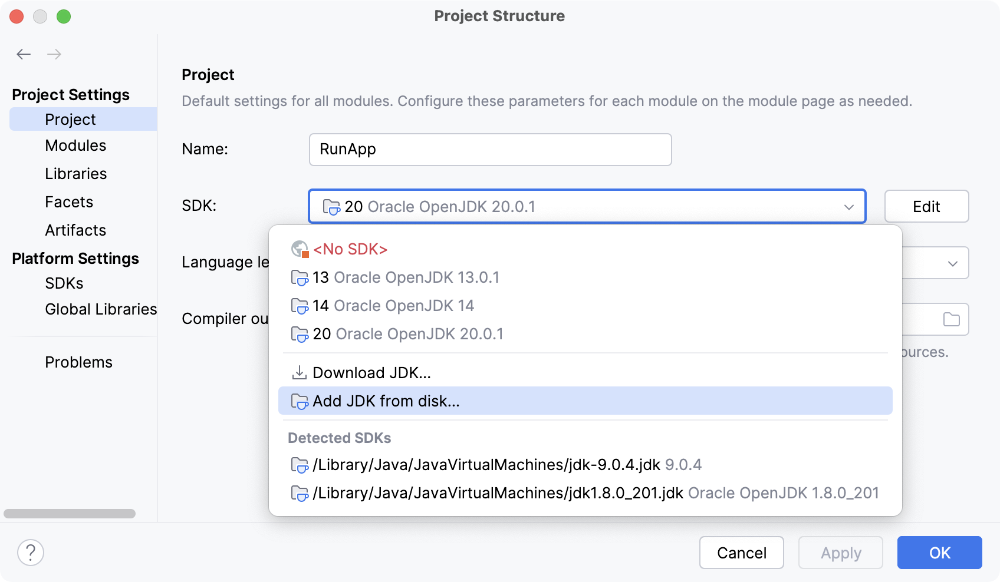